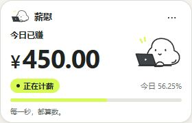
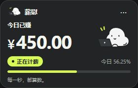
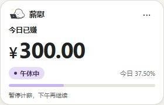
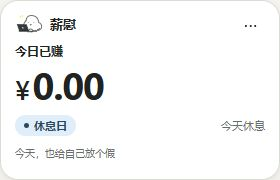
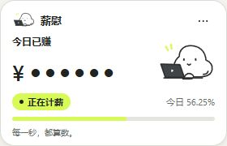
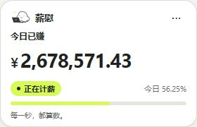
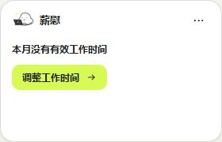

薪慰 · 统一视觉实现对照
左侧为用户参考稿局部；其余均为浏览器实际渲染截图。参考图的数据与布局按本轮 prompt 收敛，并非逐像素复制。
参考：图 2 小窗局部，等比裁切
保留白底、荧光黄、黑色金额与线描角色。参考中 40% / ¥326.80 为原稿示例。实现：浅色小窗，280 × 180

固定演示时间为 2026年11月3日14:30。金额 ¥450.00，进度56.25%，均由现有计薪核心计算。本轮明确收敛：
只保留“小窗＋设置”。
原始 SVG 角色，仅工作态展示。
38px 核心金额、11px 状态。
同一套颜色语义覆盖深浅主题。
280×150 调整为280×180，保留可读字号与操作空间。
实现：深色小窗

实现：午休中

实现：休息日

实现：金额隐藏

实现：长金额

实现：配置异常
